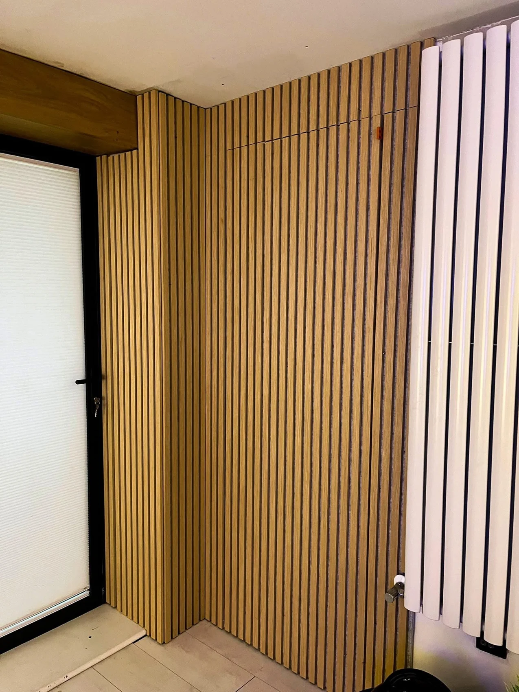

J&P HOME IMPROVEMENTS · SOUTH WALES
Your privacy.
How your enquiry details are handled.
Your enquiry
The form prepares a WhatsApp draft in your browser. This website does not store submissions in a database. You review and send the message yourself. WhatsApp processes information under its own policies.
J&P Home Improvements uses information you send to respond to your enquiry. Call 07956 323660 with questions about your information.
No analytics or advertising scripts are included. Hosting providers may process technical connection logs.